New resources
My newest resources appear here first. The list updates automatically.
48 resources
Artikelübersicht Säugetiere – Deutsch / German Arbeitsblatt
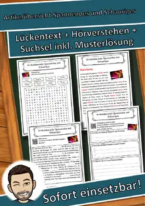
Artikelübersicht Spannendes und Schauriges – Deutsch / German Arbeitsblatt
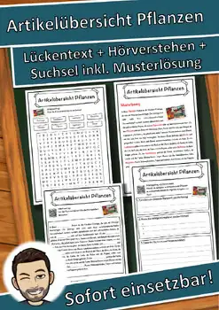
Artikelübersicht Pflanzen – Deutsch / German Arbeitsblatt
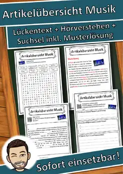
Artikelübersicht Musik – Deutsch / German Arbeitsblatt
Artikelübersicht Fußball – Deutsch / German Arbeitsblatt
Artikelübersicht Christentum – Deutsch / German Arbeitsblatt

Arthur Conan Doyle – Arbeitsblatt Lückentext & Hörverstehen (Deutsch / German)
Artenvielfalt – Arbeitsblatt Lückentext & Hörverstehen (Deutsch / German)
Armut – Arbeitsblatt Lückentext, Hörverstehen & Suchsel | Deutsch / German
Armee – Arbeitsblatt Lückentext, Hörverstehen & Suchsel | Deutsch / German
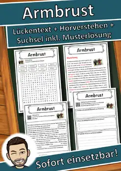
Armbrust – Arbeitsblatt Lückentext, Hörverstehen & Suchsel | Deutsch / German
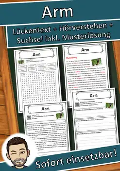
Arm – Arbeitsblatt Lückentext, Hörverstehen & Suchsel | Deutsch / German

Aristoteles – Arbeitsblatt Lückentext, Hörverstehen & Suchsel | Deutsch / German
Arie – Arbeitsblatt Lückentext, Hörverstehen & Suchsel | Deutsch / German
Ares – Arbeitsblatt Lückentext, Hörverstehen & Suchsel | Deutsch / German
Archäologie – Arbeitsblatt Lückentext, Hörverstehen & Suchsel | Deutsch / German
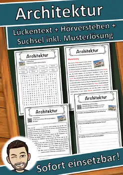
Architektur – Arbeitsblatt Lückentext, Hörverstehen & Suchsel | Deutsch / German

Archimedes – Arbeitsblatt Lückentext, Hörverstehen & Suchsel | Deutsch / German
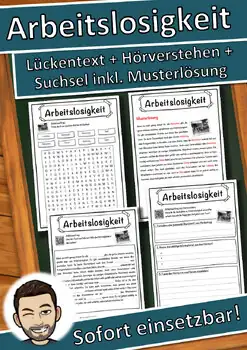
Arbeitslosigkeit – Arbeitsblatt Lückentext & Hörverstehen (Deutsch / German)
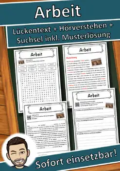
Arbeit – Arbeitsblatt Lückentext, Hörverstehen & Suchsel | Deutsch / German
Arabischer Frühling – Arbeitsblatt Lückentext & Hörverstehen (Deutsch / German)
Arabische Sprache – Arbeitsblatt Lückentext & Hörverstehen (Deutsch / German)
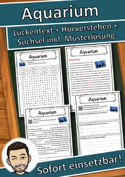
Aquarium – Arbeitsblatt Lückentext, Hörverstehen & Suchsel | Deutsch / German
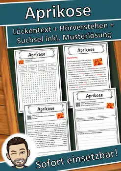
Aprikose – Arbeitsblatt Lückentext, Hörverstehen & Suchsel | Deutsch / German
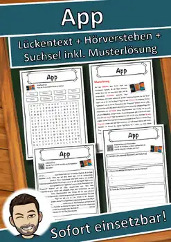
App – Arbeitsblatt Lückentext, Hörverstehen & Suchsel | Deutsch / German
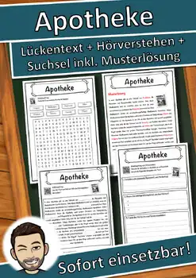
Apotheke – Arbeitsblatt Lückentext, Hörverstehen & Suchsel | Deutsch / German
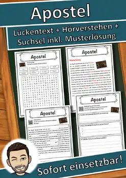
Apostel – Arbeitsblatt Lückentext, Hörverstehen & Suchsel | Deutsch / German
Apollo 11 – Arbeitsblatt Lückentext, Hörverstehen & Suchsel | Deutsch / German
Aphrodite – Arbeitsblatt Lückentext, Hörverstehen & Suchsel | Deutsch / German
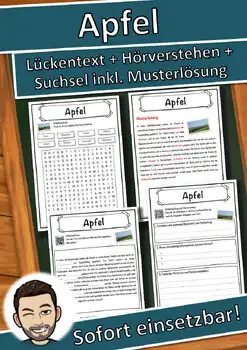
Apfel – Arbeitsblatt Lückentext, Hörverstehen & Suchsel | Deutsch / German
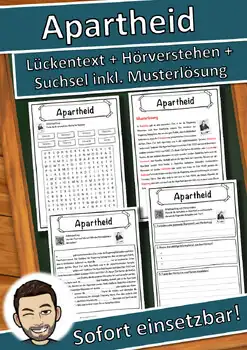
Apartheid – Arbeitsblatt Lückentext, Hörverstehen & Suchsel | Deutsch / German
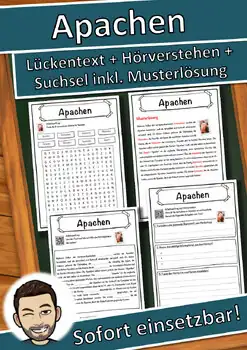
Apachen – Arbeitsblatt Lückentext, Hörverstehen & Suchsel | Deutsch / German
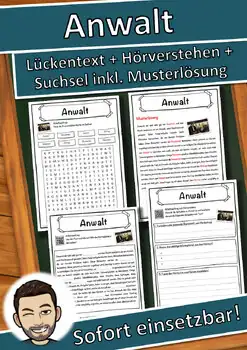
Anwalt – Arbeitsblatt Lückentext, Hörverstehen & Suchsel | Deutsch / German
Antonio Vivaldi – Arbeitsblatt Lückentext & Hörverstehen (Deutsch / German)

Antoine de Saint-Exupéry – Deutsch / German Arbeitsblatt
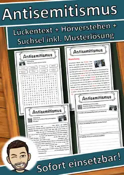
Antisemitismus – Arbeitsblatt Lückentext & Hörverstehen (Deutsch / German)
Antilope – Arbeitsblatt Lückentext, Hörverstehen & Suchsel | Deutsch / German
Antibiotikum – Arbeitsblatt Lückentext & Hörverstehen (Deutsch / German)
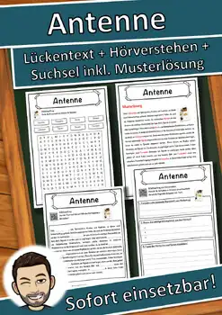
Antenne – Arbeitsblatt Lückentext, Hörverstehen & Suchsel | Deutsch / German
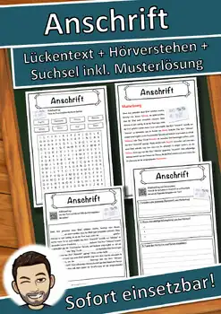
Anschrift – Arbeitsblatt Lückentext, Hörverstehen & Suchsel | Deutsch / German
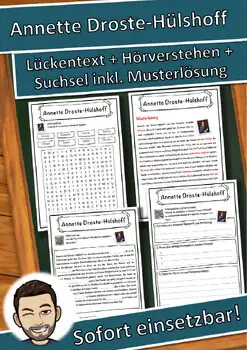
Annette Droste-Hülshoff – Deutsch / German Arbeitsblatt
Anne Frank – Arbeitsblatt Lückentext, Hörverstehen & Suchsel | Deutsch / German
Anna Politkowskaja – Arbeitsblatt Lückentext & Hörverstehen (Deutsch / German)
Angst – Arbeitsblatt Lückentext, Hörverstehen & Suchsel | Deutsch / German
Angestellter – Arbeitsblatt Lückentext & Hörverstehen (Deutsch / German)
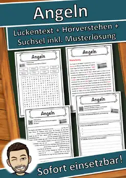
Angeln – Arbeitsblatt Lückentext, Hörverstehen & Suchsel | Deutsch / German
Andy Warhol – Arbeitsblatt Lückentext, Hörverstehen & Suchsel | Deutsch / German

André-Marie Ampère – Arbeitsblatt Lückentext & Hörverstehen (Deutsch / German)
No resources found – try a different search term or filter.